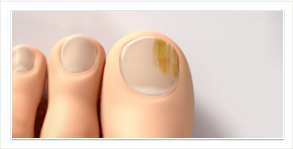
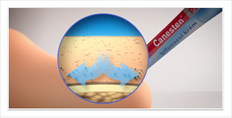
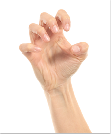
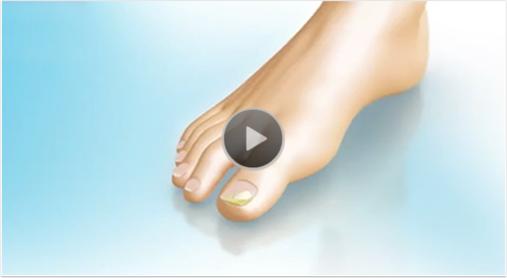
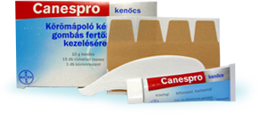
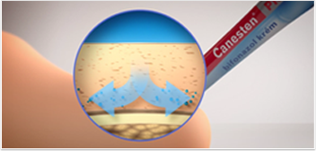
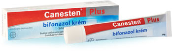

A leggyorsabb megoldás körömgomba kezelésére
Hosszú ideig tartó, felületi kezelés helyett használja a Canespro és Canesten Plus
kétfázisú megoldását, amely:
•A legrövidebb felületi kezelés-
nél is kétszer gyorsabban szün-
tetheti meg a körömgombát!
2Xgyorsabban
• Mélyre hatolva, gyökerestől pusztítja el
a körömgombát
-
Mi a körömgomba?
Tudjon meg többet a körömgombáról, és kialakulásának okairól!
-
Ismerje fel a körömgombát!
Ismerje fel Ön is a körömgomba tüneteit,
hogy időben kezelhesse a fertőzést! -
Kezelje a körömgombát!
Tájékozódjon a körömgomba
kezelésének nehézségeiről, és a megoldásról!
Mi a körömgomba?
A köröm gombás betegsége különböző gombafajok által kiváltott körömelváltozás, amelyet sokszor gombás lábfertőzés előz meg.
Leggyakoribb formája az úgynevezett DLSO (Distalis és laterális subungualis onychomycosis) típusú körömgombás fertőzés.
A fertőzés a köröm szabad széle, és az oldalsó körömredő felől kezdődik. Idővel,
a fertőzés továbbterjedhet a köröm többi része, vagy más körmök felé, így kezelését célszerű minél hamarabb elkezdeni.
- 
-
A körömgomba kiváltó okai:
-
A stressz vagy egy betegség fogékonyabbá teheti a szervezetet
a fertőzésekre. - A túlzott higiénia is gyengítheti a szervezet kórokozókkal szembeni természetes védekezőképességét.
- Az uszodák, szaunák, közös zuhanyzók és további meleg, párás helyek megkönnyíthetik a gombák terjedését.
- A rosszul szellőző, zárt cipők, és műszálas zoknik viselete szintén hozzájárulhat a gombás fertőzések kialakulásához.
- A köröm sérülése is kiváltó tényezője lehet egy gombás fertőzés kialakulásának.
-
A stressz vagy egy betegség fogékonyabbá teheti a szervezetet
Hogyan lehet felismerni a körömgombát?
A lábgombától eltérően a köröm gombás fertőzése nem jár viszketéssel, és akár évekig észrevétlen maradhat. A fertőzés
a köröm megvastagodásával, töredezettségével jár, felülete fehér vagy sárgás színűvé válik. Fájdalom akkor jelentkezik, ha
a megvastagodott körmöt elkezdi nyomni a szűkebb cipő. Ha bizonytalan a tüneteket illetően, vagy körme sötét, fekete elszíneződést mutat, mindenképpen forduljon szakorvoshoz!
Kellemetlen tünetei miatt a körömgombás fertőzés nemcsak betegség, hanem esztétikai probléma is. A tünetek az ápolatlanság látszatát keltik, ami szégyenérzetet válthat ki. Emiatt sokan a körömgomba titkolásához, takargatásához folyamodnak megoldásként. Nem csoda, hogy szeretnének minél gyorsabban és végleg megszabadulni tőle.
Hogyan kell kezelni a körömgombát?
A körömgomba esetében makacs fertőzésről van szó, ezért a választott terápiának számos nehézséget kell leküzdenie:
- Körömgombás fertőzést egyszerre többféle gombafaj is okozhat. A Canespro egy széles hatásspektrumú gombaellenes készítmény, amely hatékonyan szüntetheti meg a többféle gomba által okozott fertőzést is.
-
A Canespro és Canesten Plus kétfázisú kezelés segítségével a hatóanyag a fertőzött rétegek
mélyére hatol és gyökerestől szüntetheti meg
a fertőzést. -
A legtöbb kezelés rendkívül hosszadalmas, hónapokig tartó folyamatos foglalkozást igényel.
A Canespro és a Canesten Plus kombinációja mindössze 6 hét alatt nyújthat megoldást
a körömgombára.
A Canespro és a Canesten Plus kétfázisú kezelés segítségével gyökerestől szüntetheti meg a fertőzést.
Canespro és Canesten Plus 2 fázisú megoldás: a legrövidebb felületi kezelésnél is kétszer gyorsabban szüntetheti meg a körömgombát.
-
1. fázis - 2 hetes Canespro-kezelés
Az első fázisban a Canespro kenőcs felpuhítja a fertőzött körömrészt, és lehetővé teszi a köröm fájdalommentes eltávolítását. A beteg részek eltávolításával megakadályozhatjuk
a gomba átterjedését az egészséges területekre.A Canespro körömápoló készlet 10 g Canespro kenőcsöt, 15 darab vízhatlan tapaszt és 1 darab műanyag körömreszelőt tartalmaz.
A kezeléssel kapcsolatos további információkért kattintson
a letölthető betegtájékoztatóra! -
2. fázis - 4 hét Canesten Plus-kezelés
A beteg körömrész eltávolítása után a Canesten Plus krém
 A 2 fázisú megoldás segíthet megszabadulni a köröm-
a második fázisban gyökerestől szüntetheti meg a fertőzést.
A kezelés második fázisa feltétlenül szükséges a probléma teljes körű megoldásához.
gombától, így körmei újra szépek és egészségesek lehetnek.Ha több mint 3 köröm, vagy a köröm felületének 2/3-nál nagyobb rész érintett a fertőzésben, a kezelés kiegészítése,
illetve bőrgyógyász felkeresése javasolt. A kezeléssel
kapcsolatos további információkért kattintson
a letölthető betegtájékoztatóra!